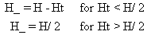
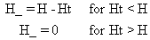

8.2 PLUME INTERSECTION WITH TOPOGRAPHICAL FEATURES
The
algorithms for plume intersections with local topography closely follow
techniques suggested by Hanna et al. (1982). For unstable and neutral conditions,
the plume height is reduced by up to 50% based on the height of local terrain.
That is

(79)
where
H' = plume height over local terrain (m)
H = plume height based on elevation of release point (m)
Ht = height of local terrain over elevation of release point (m).
For stable
conditions, the plume is assumed to impinge directly on local topographical
features and subsequently follow the features. The plume height is computed
as

(80)
with an additional restriction that the plume
height is never allowed to increase as a function of distance as a result
of terrain effects. If the terrain would result in a plume rise increase
at a given distance, then the plume is maintained at the plume rise computed
for the previous distance.